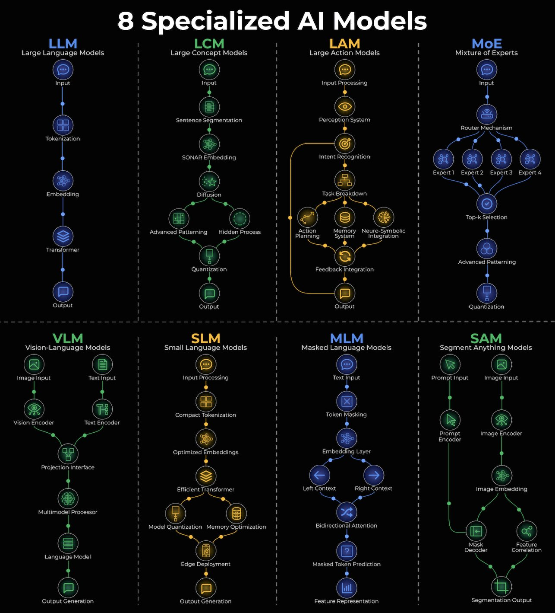

Modern AI is not a single type of model — it is a family of specialized architectures, each designed around a different task modality or constraint. Understanding which architecture to use, and why, is as important as understanding how to train them.
Different model families exist because different tasks impose different structural bottlenecks. The point of this taxonomy is selection, not memorization.
Text generation and reasoning via autoregressive token prediction.
Reasons at the level of concepts rather than tokens — language-agnostic semantic space.
Executes multi-step tasks in digital or physical environments.
Sparse activation: only top-k expert sub-networks run per token.
Combines a vision encoder with an LLM via a projection adapter.
Optimized for edge deployment — low memory, low power, on-device.
Bidirectional encoder predicting randomly masked tokens.
Universal image segmentation for any prompt type.

The dominant architecture for text generation and reasoning. LLMs generate text by predicting the next token given all previous tokens. The transformer's self-attention allows every token to attend to every other token in the context window.
See attention-transformers for full mechanics.
Examples: GPT-4, Claude, LLaMA, Gemini
LCMs reason at the level of concepts rather than tokens — operating in a higher-level semantic space that abstracts away surface form. The key distinction from LLMs: LCMs work at a level of abstraction above individual tokens, making them potentially more language-agnostic and better at cross-lingual reasoning.
LAMs are designed to execute multi-step tasks in the real world or digital environments — not just generate text, but take actions. They are the architecture behind AI agents that interact with software or physical environments.
See ai-agents for orchestration patterns.
MoE replaces a single dense feedforward network with many specialized "expert" sub-networks. Only a subset of experts are activated for any given input. The model can have vastly more total parameters than a dense model, but only activates a fraction per token — so compute cost stays comparable to a smaller dense model while capacity increases.
MoE models require all expert weights resident in memory simultaneously even though only a few activate per token. A 47B-parameter MoE model may need as much VRAM as a 70B dense model. See gpu-cuda for VRAM math.
Gemma 4's 26B A4B model uses 128 experts with 8 active + 1 shared expert, running at the speed of a 4B model despite 26B total parameters.
VLMs combine a vision encoder with a language model, enabling reasoning across images and text. The projection interface is the critical bridge — it must align two different embedding spaces so the language model can reason about image content as if it were text.
See multimodal-models for CLIP and BLIP architectures.
Examples: LLaVA, GPT-4V, Claude 3, Gemini
SLMs are language models optimized for edge deployment — devices with limited memory, compute, and power budget. They trade raw capability for efficiency.
Common optimizations: weight quantization (INT4/INT8), knowledge distillation, pruning, grouped-query attention. See quantization for the full tradeoff landscape.
Examples: Phi-3, Gemma 2B, Mistral 7B (small-scale), Apple's on-device models
MLMs learn bidirectional representations by predicting randomly masked tokens given surrounding context — unlike LLMs which predict left-to-right. Each token sees the entire surrounding context, not just what came before. This makes them excellent encoders for classification, retrieval, and semantic similarity tasks.
Limitation: MLMs cannot generate text autoregressively.
Examples: BERT, RoBERTa, DeBERTa
SAMs are designed for universal image segmentation — given any prompt (point, box, or text), segment the relevant object at any granularity. The image encoder is the expensive step and runs once; the prompt encoder + mask decoder are fast, enabling real-time interactive segmentation.
Examples: SAM (Meta), SAM 2 (video extension), Grounded-SAM (text-prompted)
| Need | Architecture |
|---|---|
| Text generation, coding, reasoning | LLM |
| High-level concept reasoning, cross-lingual | LCM |
| Task automation, software/robot interaction | LAM |
| Large-capacity model within compute budget | MoE |
| Vision + language reasoning (image QA) | VLM |
| On-device inference, low latency, offline | SLM |
| Embeddings, classification, search/retrieval | MLM |
| Image segmentation, interactive object selection | SAM |